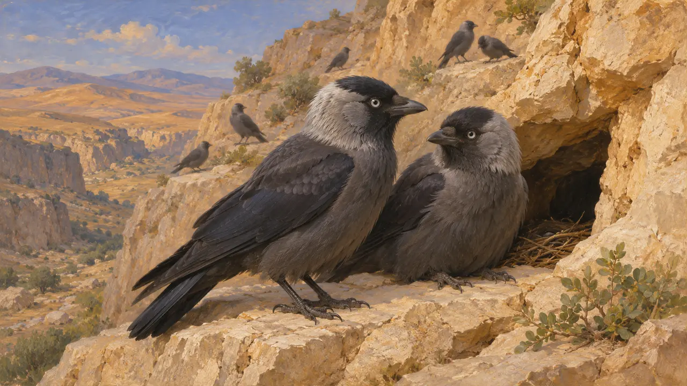
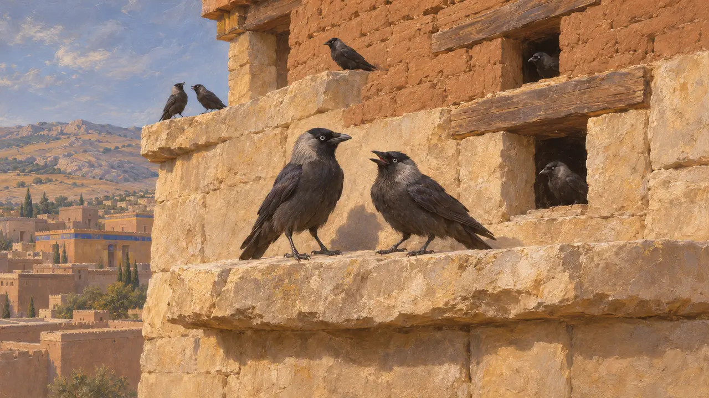
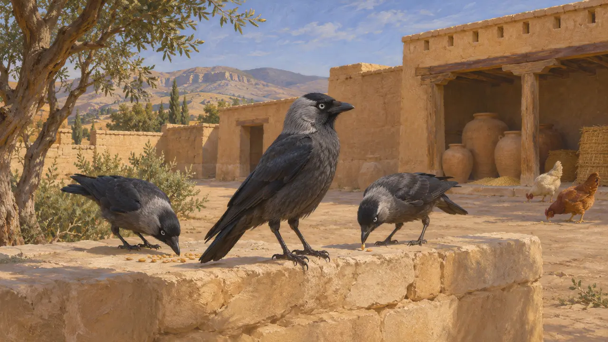
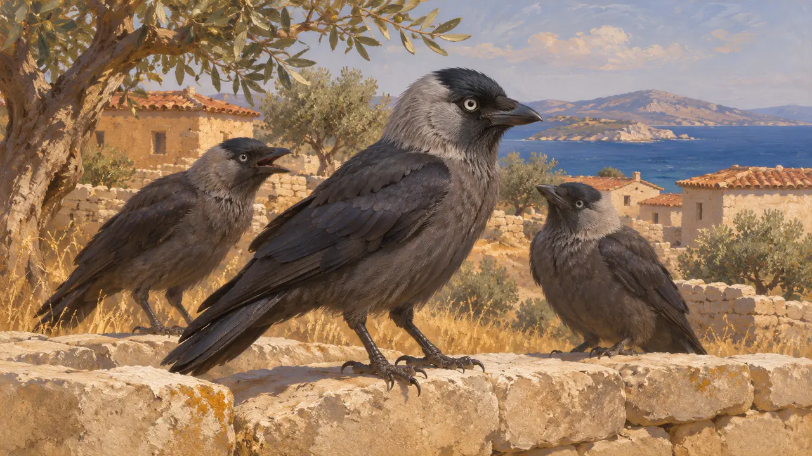
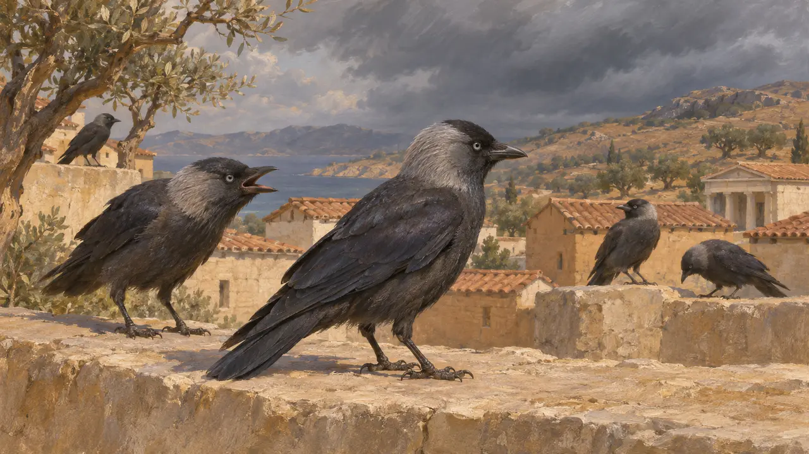

갈까마귀
페르시아와 그리스 땅에 사는 작고 무리 짓기를 좋아하는 까마귀, 기원전 559~479년
게임에서: 레벨 1: 건국자의 무덤、레벨 3: 거짓、레벨 4: 테라스、레벨 5: 칙서、레벨 6: 배다리、레벨 7: 불타는 사르디스、레벨 8: 마라톤만、레벨 9: 운하、레벨 10: 뜨거운 문、레벨 11: 최종장
갈까마귀(Corvus monedula)는 목덜미가 회색인 작은 까마귀로, 절벽과 폐허, 오래된 건물에 둥지를 튼다. 서아시아와 유럽 전역에 살며, 페르시아 제국의 도시와 요새, 테라스 곁에서도 살았을 것이다. 이 새를 설명한 페르시아 문헌은 알려져 있지 않으므로, 말할 수 있는 내용은 오늘날 관찰되는 이 새의 습성과 후대 그리스 박물학에 근거한다.
게임에서: 게임은 파사르가다에, 바가스타나, 파르사, 수사, 이스트로스, 사르디스, 마라톤, 아토스, 테르모필레, 플라타이아의 10개 레벨 하늘에 새로 White-necked 갈까마귀 대신 populations를 그린다.

이 새는 무엇인가
고대의 전승갈까마귀는 몸길이가 약 33센티미터이며, 검은 몸에 목덜미는 회색이고 눈은 옅은 색이다. 무리를 지어 살고, 짝은 여러 해 동안 유지되는 것으로 여겨진다. 절벽의 구멍, 바위 협곡, 나무 구멍, 건물의 틈에 둥지를 튼다. 오늘날의 분포 범위는 유럽, 북아프리카, 이란 고원을 포함한 서아시아에 걸쳐 있다. 이는 현대의 관찰이며 그 시대의 증거가 아니다.
Modern ornithological handbooks

건물 곁에서 살아가기
분쟁 중갈까마귀는 턱과 틈이 있는 높은 석조·벽돌 구조물을 좋아하므로, 테라스와 탑, 폐허가 이들에게 알맞았을 것이다. 필자가 아는 한, 이 게임에 나오는 유적지의 발굴 보고서 중 이 시기의 갈까마귀 유해를 기록한 것은 없다. 따라서 이곳에 갈까마귀가 있었다는 것은 발견이 아니라 습성에 기댄 추론이다.
Inference from habitat; no site-specific record cited

페르시아인의 삶 속의 새
당대 기록페르세폴리스 요새 점토판에는 페르시스의 왕실 영지에서 지급된 가금류와 그 밖의 물자가 기록되어 있다. 필자가 아는 한 이 문서들 가운데 갈까마귀를 가리키는 말은 없으므로, 페르시아 문서는 갈까마귀에 관한 직접적인 증거를 주지 않는다.
Persepolis Fortification tablets, general survey in Briant, From Cyrus to Alexander, 2002

까마귀를 다룬 그리스 저술가들
고대의 전승그리스 박물학은 write갈까마귀를 까마귀류의 새로 다루었다. 기원전 4세기에 글을 쓴 아리스토텔레스는 자신의 박물지에서 이런 종류의 새를 설명했다. 이런 저작은 이 새가 페르시아가 아니라 그리스 세계에서 어떻게 보였는지를 알려 주며, 이 게임이 다루는 사건들보다 나중에 쓰였다.
Aristotle, Historia Animalium

전조와 우화
후대의 전설까마귀와 그 근연종은 후대의 그리스 우화와 전조 전승에서 수다스러운 새, 날씨나 운세의 징조로 나타난다. 이 이야기들은 기원전 479년보다 한참 뒤에 기록되었으므로, 전쟁 시기의 페르시아인이나 그리스인이 갈까마귀를 어떻게 여겼는지에 대해서는 확실한 것을 말해 주지 않는다.
Later Greek fable and omen traditions
출처
- Aristotle, Historia Animalium
- Modern ornithological handbooks
- P. Briant, From Cyrus to Alexander, 2002
- Persepolis Fortification tablets